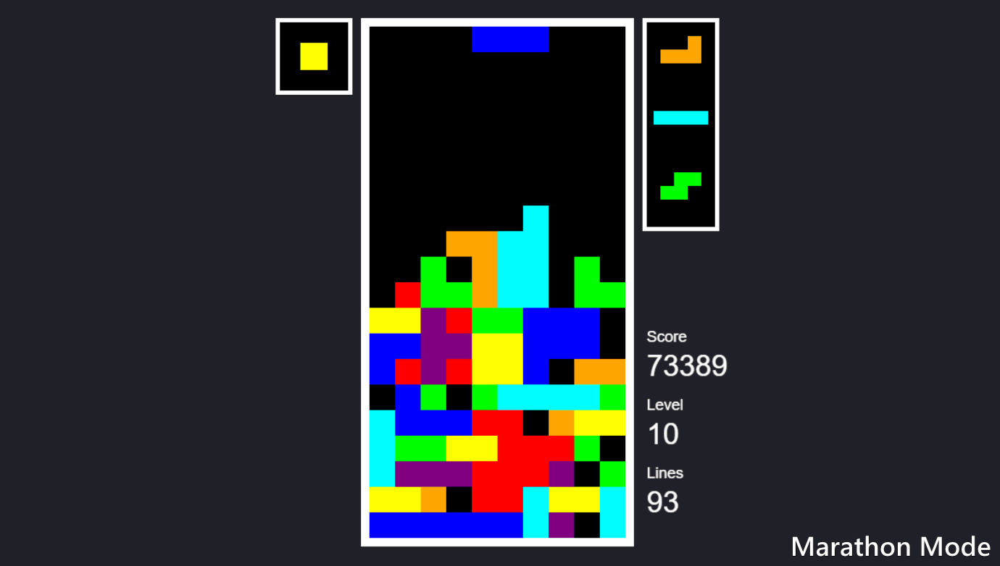
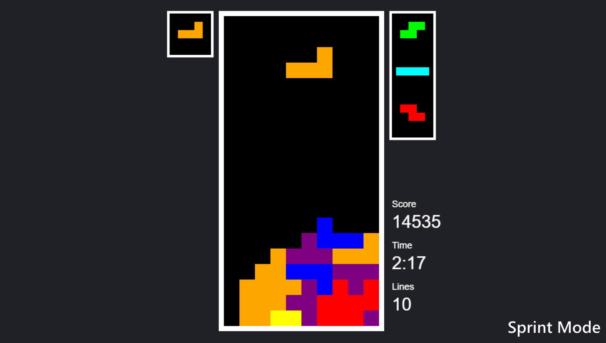
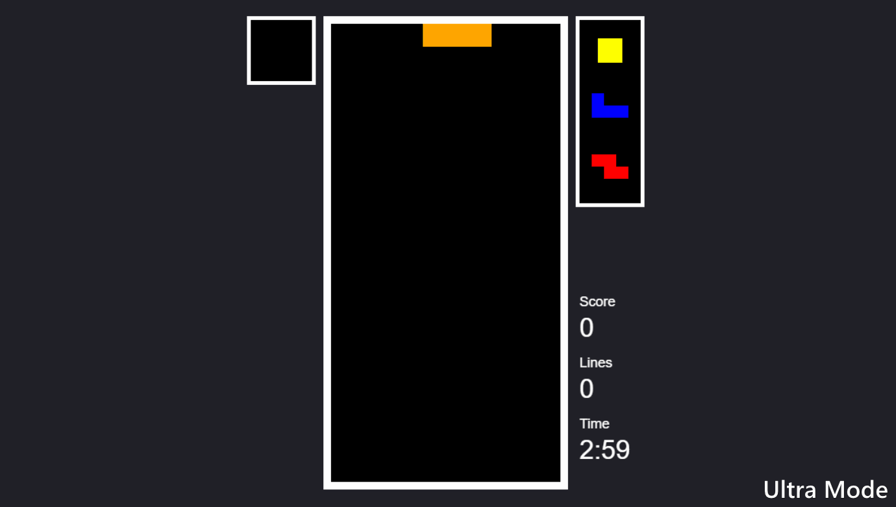
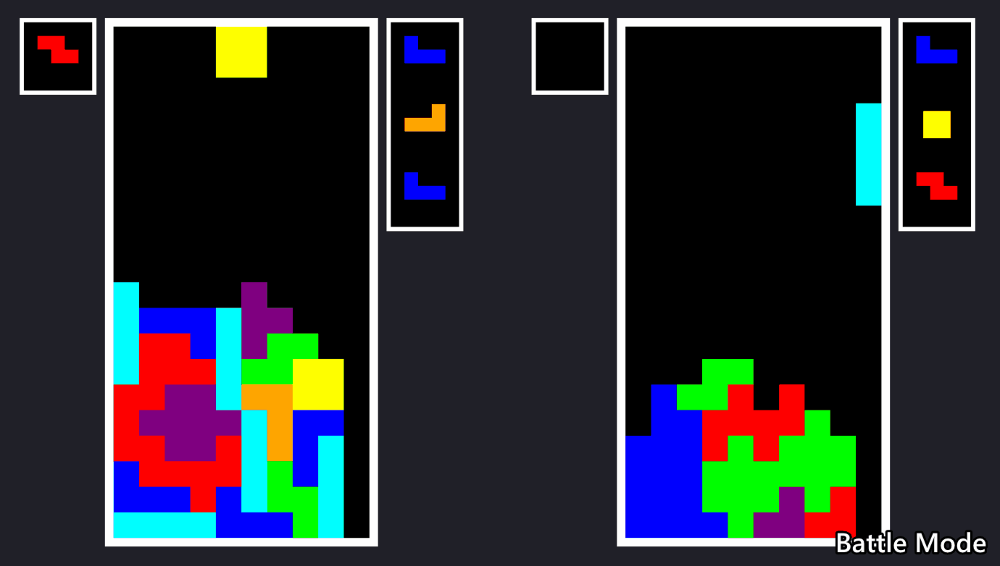
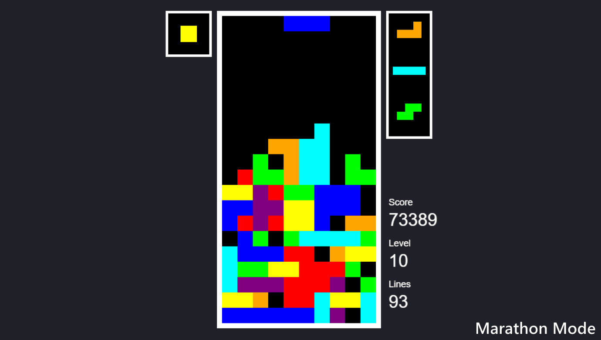
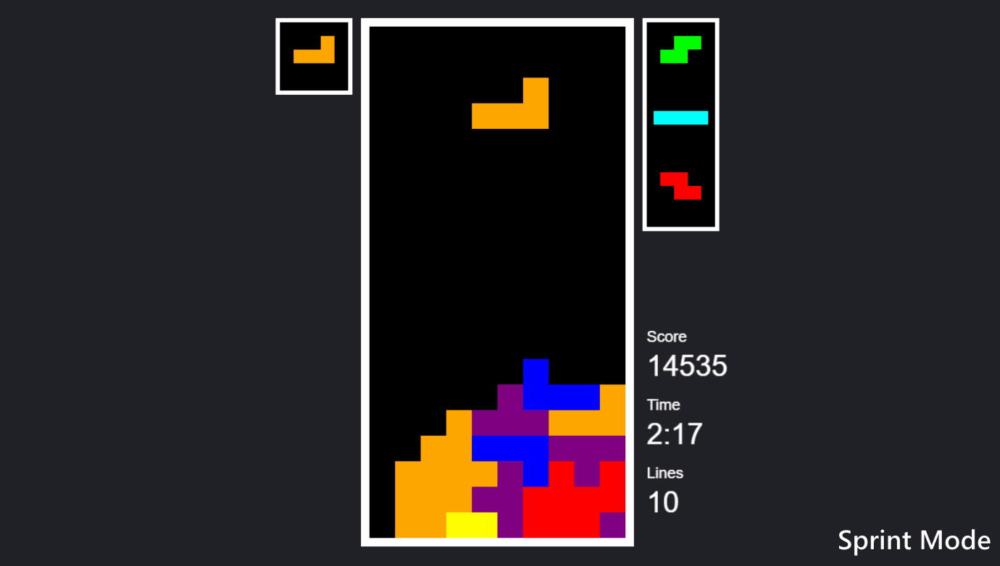
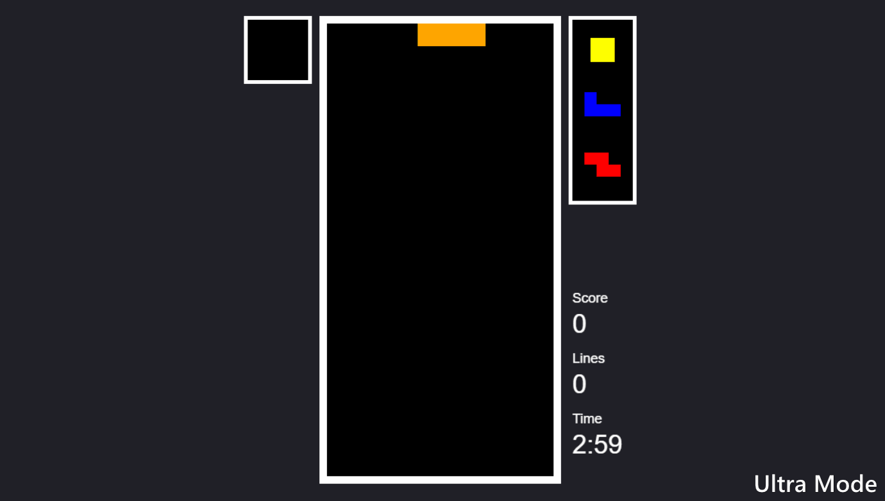
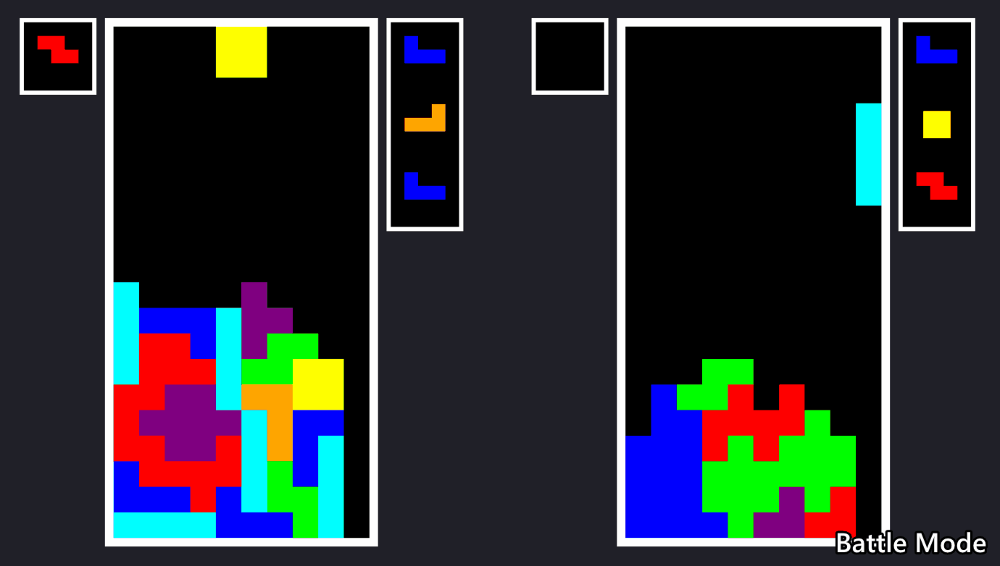

James Charsley
JsTetris
Ongoing Personal Project
Introduction
An implementation of Tetris made using HTML5 canvas and JavaScript. It currently features several common game modes, including a battle mode against an AI opponent. However, I intend to extend this project by improving the AI and adding additional game modes, with the ability to combine multiple game modes together in a single game.
I chose JavaScript as I wanted this to be a browser-based game, however in the future I may port this to other languages/platforms.
Images

 







Current Features
- Common Tetris features such as the next queue, hold slot and hard drop.
- Several standard Tetris modes, including a battle mode.
- Heuristic based AI opponent in Battle mode.
- Currently uses the height of placed piece and how many holes there are in the matrix as metrics to determine how good a move would be.
Plans in the Future
- Improve the core Tetris mechanics. This includes adding the standard tetris piece generation (7-bag), improving the rotation system and add additional ways of scoring.
- Improve the AI by adding additional metrics to the heuristic, as well as allowing it to play other game modes.
- Add additional game modes, such as cascade, hotline, and chill. I plan to add the ability to combine multiple game modes together in a single game.
- Support additional input types, such as touch screen and gamepads.
- Improve the visuals and sound.